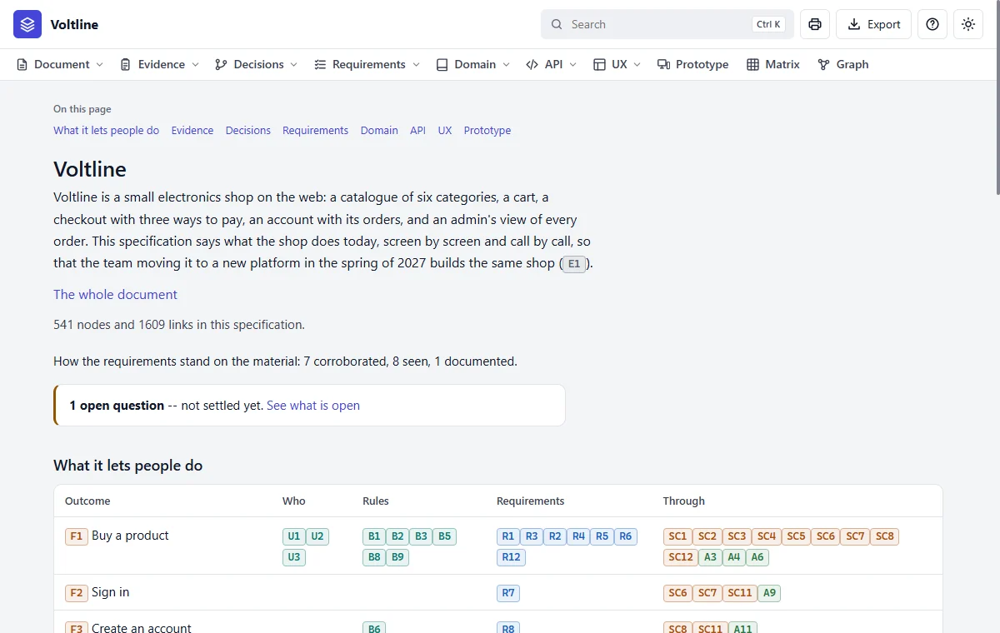
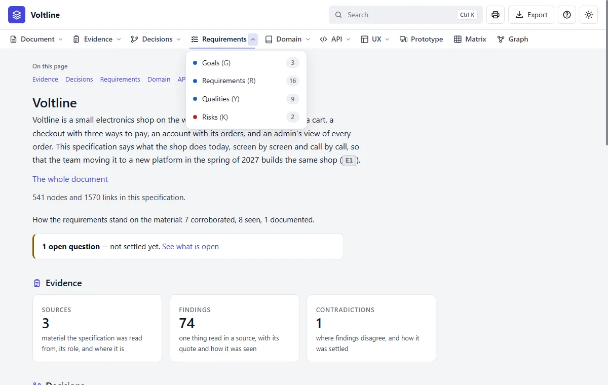
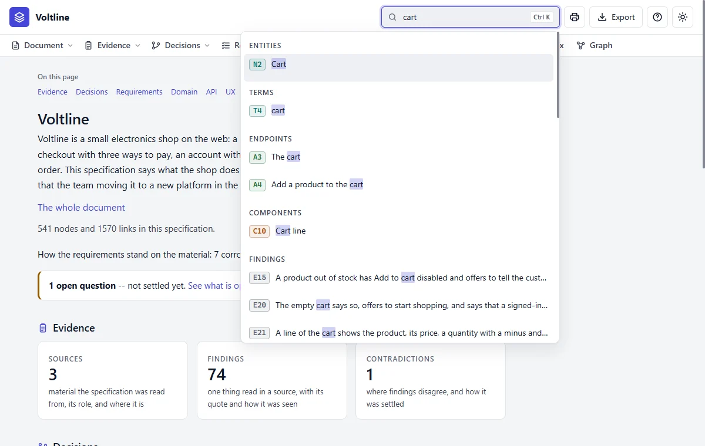

The tour
In everyday termsThis is the front door. Your specification opens as a small website on your own computer, and this tour shows you around it, one stop at a time. Think of it as a building directory: it tells you what's here, how much of it, and whether anything needs attention.
What it answersWhat is this specification, how big is it, and how well is it backed?
How the site is arranged
Each word in the bar across the top opens a module, a section of the site. They're always in the same order, which follows how a product is thought about: left to right takes you from reasons to results. Matrix and Graph aren't stops on that road. They're two ways of seeing all of it at once.
To open this site for Voltline, run index.cmd on Windows, or sh index.sh on macOS and Linux, in examples/shop/specs. Or ask Claude to open it. It's the same in every specification, so what you learn here works everywhere.
The page, part by part

- 1The name. Always leads back here.
- 2Search (Ctrl K or /). Finds any node or row by its ID, its name or its words.
- 3Print. Opens this page on a sheet of A4 in a new tab.
- 4Export. Saves the whole specification as one HTML file.
- 5Help, inside the application.
- 6Appearance: system, light or dark.
- 7The bar. A word opens that module's page. The small arrow beside it opens its menu.
- 8The backing. How the requirements stand on what was read.
- 9What's unsettled. The link takes you to What is open.

Prototype, Matrix and Graph have no menu: each opens straight away.
Read it like this
- Read the first paragraph: what the product is and why this specification exists.
- Check the size: Voltline has 541 facts and 1,884 links, so you'll find your way around it, not read it through.
- Read the backing line. 7 corroborated, 8 seen, 1 documented means nearly every requirement was seen in the real shop, not just written down somewhere.
- Look for the notice. If something is open, that's usually the best place to start.

Mistakes people make
- Reading it like a document. You can't read 541 facts from top to bottom, and you don't need to. Follow a question instead.
- Ignoring the backing line. A specification that looks complete can be mostly inferred. This line tells you in a moment.